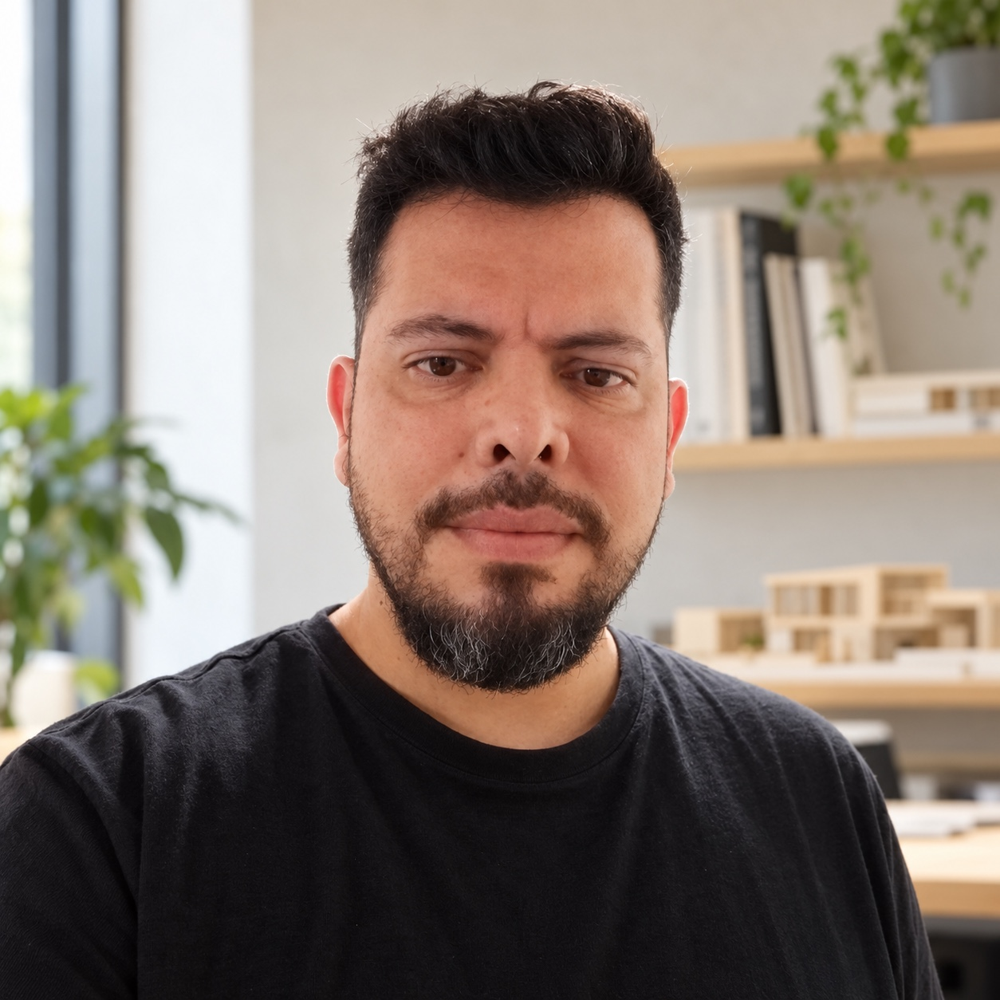

EL PRIMER PASO
Consultar Evaluación técnica y económica
Revisión de la información disponible, problemas visibles, trabajos prioritarios y estimación preliminar de la remodelación. Visita al inmueble cuando esté incluida en el alcance.
ROSARIO · FUNES · ALREDEDORES
Una mirada técnica sobre la propiedad.
Un análisis claro de su remodelación.
Arquitectura y consultoría en flipping inmobiliario.
01 / MIRAR MÁS ALLÁ DEL AVISO
Comprar, remodelar y vender una propiedad es una operación completa. El estado del inmueble, los trabajos que necesita y el tiempo que lleva transformarlo cambian los números.
Te ayudo a identificar qué revisar, qué conviene mejorar y qué información falta antes de decidir.
02 / CÓMO PUEDO ACOMPAÑARTE
Empezamos por entender la propiedad.
Cada etapa tiene su propio alcance.
Revisión de la información disponible, problemas visibles, trabajos prioritarios y estimación preliminar de la remodelación. Visita al inmueble cuando esté incluida en el alcance.
Definición de las intervenciones, presupuesto por rubros y organización de los tiempos. Un plan para entender qué hacer y en qué orden.
Acompañamiento profesional para la transformación del inmueble. Coordinación y seguimiento definidos para las necesidades de cada proyecto.
Honorarios, visitas y fechas de entrega se acuerdan antes de contratar cada etapa.
03 / UNA FORMA DE TRABAJAR
La zona, la propiedad y qué te gustaría hacer. Podés compartir fotos o el enlace del aviso.
Revisamos qué información hace falta y acordamos modalidad, alcance y honorarios.
Una devolución para avanzar, negociar, pedir verificaciones adicionales o descartar la alternativa.

JAVIER VELARDEZ · ROSARIO / FUNES
04 / EL PROFESIONAL DETRÁS DEL ANÁLISIS
Me formé en la Universidad Nacional de Córdoba. Mi trayectoria combina proyecto, dirección y seguimiento de obras, presupuestos, análisis de costos y evaluación de emprendimientos.
Hoy pongo esa experiencia al servicio de quienes necesitan entender una propiedad y su posible transformación antes de invertir en ella.
El conocimiento de la obra,
aplicado a la decisión de compra.
V Constructivo acompaña los servicios de proyecto y remodelación, según el alcance contratado.
05 / HABLEMOS DE TU PROPIEDAD
Contame qué inmueble estás evaluando y proponé una fecha para conversar o coordinar una visita.
Horarios de Argentina. Atención con cita previa.
Atención por coordinación previa.
La fecha se confirma con Javier después de revisar tu caso y el alcance del servicio.
Abrí tu correo para enviársela a Javier. Todavía no se envió y no hay una visita confirmada.
DUDAS FRECUENTES
Sí. La evaluación está pensada para revisar el inmueble y los trabajos que puede necesitar antes de avanzar con la operación. Se define qué información hace falta para tu caso.
Depende de la propiedad y del alcance acordado. La modalidad, las visitas y los honorarios se confirman antes de contratar.
Sí. La evaluación es una etapa independiente. El proyecto, la dirección o la gestión de la remodelación pueden presupuestarse después.
Se pueden estudiar escenarios con datos y supuestos identificados: compra, gastos, reforma, plazos y comparables de salida. El resultado real depende de la operación y del mercado; una proyección no asegura una ganancia.
Este formulario prepara un mensaje en tu dispositivo. Para enviarlo, tenés que abrir tu correo y confirmar el envío. El sitio no guarda tus datos en una base de clientes. La información que envíes se utilizará para responder tu consulta y coordinar el servicio. Podés pedir su actualización o eliminación escribiendo a vconstructivo@gmail.com.